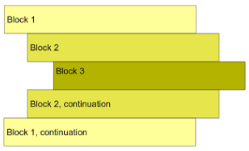
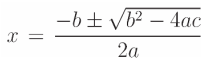

UD4. Estructures de control en Python
1. Sentències
Les sentències són cadascuna de les ordres que es donen a un programa. Hi ha de diferent tipus, independentment del llenguatge de programació:
- D'importació: Indiquen quines llibreries del programa van a fer-se servir. Com ja hem vist, les llibreries són un conjunt de funcions que ja estan fetes. Les sentències d'importació van al principi del programa.
- Declaratives: No és el cas de Python, però en C i Java vorem que per a emprar una variable primer cal declarar-la o definir-la (indicar el tipus). Això es fa en sentències declaratives. Ara bé, també entren en este grup les declaracions de funcions.
- Instruccions seqüencials: Bàsicament són les instruccions d'assignació, de mostrar per pantalla i llegir de teclat. Encara que hi ha d'altres com: emetre un so, esborrar un fitxer... o invocar (cridar) a una funció.
- De control: Son les que vorem en este tema. Permeten, depenent d'una condició, executar unes instruccions o altres (bifurcacions) o repetir un conjunt d'instruccions (bucles).
2. Bifurcacions
Les instruccions de bifurcació (o selecció) serveixen per a quan volem executar un conjunt d'ordres només si es compleix alguna condició determinada.
La instrucció que s'usa en tots els llenguatges és if, però cada llenguatge té la seua sintaxi. Veiem la de Python.
2.1. Bifurcació simple: if
S'executen unes instruccions només si es compleix una condició. Si no es compleix la condició, no s'executa res en particular. Usarem:
| Python | |
|---|---|
Veiem que la sintaxi és:
2.2. Bifurcació doble: if-else
Si es compleix una condició, s'executen unes instruccions. Si no es compleix, s'executen unes altres. Usarem if i else:
| Python | |
|---|---|
2.2.1. Sagnat obligatori en Python
Les instruccions que depenen d'una condició es diu que formen un bloc.
- Python: els blocs van sagnats obligatòriament, respecte la condició del bloc

- C, Java (i la majoria de llenguatges): els blocs van tancats entre claus { ... } i preferiblement sagnats.
Exercici 1. Bifurcacions
Fes un programa que calcule les solucions reals de l'equació de 2n grau ax² + bx + c = 0 mitjançant la fórmula:

- S'ha de demanar per teclat quins valors tenen
a,bic. - Cal comprovar si té solució (allò que està dins l'arrel ha de ser possitiu).
- Ha de mostrar les 2 solucions de la
x(una amb el+i altra amb el-). O bé, només 1 solució si les 2 son la mateixa. - Per calcular l'arrel usarem la funció
math.sqrt(). de la llibreria math.
2.3. Bifurcació múltiple: if-elif-...-else
Podem pendre diferents accions en base a diferents condicions.
Emprarem un o diversos elif, que és una contracció d'else if.
| Python | |
|---|---|
Este és un exemple complet de sentència if. Com hem vist, les parts elif i else són opcionals. Per tant, la sintaxi completa de l'if és:
| Python | |
|---|---|
Exercici 2. Bifurcació múltiple
Demana una nota amb decimals i mostra el text corresponent: "ins", "suf", "bé", "not" o "exc". O bé "error" si la nota no està entre 0 i 10.
Exercici 3
Calculadora. Fes un programa que llija de teclat 2 números i una operació aritmètica (S/R/P/D). El programa farà el càlcul i imprimirà el resultat.
2.4. Altres consideracions sobre les bifurcacions
2.4.1. ifs niuats
Podem posar un if dins d'un altre, tant en la part de l'if, o d'algun elif o de l'else.
Exemple
- Fixa't que els sagnats són molt importants. Estos 3 últims print s'executaran en situacions diferents.
2.4.2. Condicions compostes
Cada condició que es posa en els if (també en els while, com vorem després) pot ser composta. És a dir: diverses condicions unides amb or i/o and, a més de poder tindre l'operador not.
| Python | |
|---|---|
O bé, podem invertir els missatges si posem la condició contrària:
| Python | |
|---|---|
O bé, aplicant De Morgan:
| Python | |
|---|---|
Exercici 5. Bifurcacions amb condicions compostes
Encara que es pot fer amb condicions simples, fes-ho amb condicions compostes:
- Fes un programa que mostre el màxim de 3 números instroduïts per teclat.
Exercici 6
Encara que es pot fer amb condicions simples, fes-ho amb condicions compostes:
- Demana una nota sense decimals i mostra el text corresponent:
ins,suf,bé,notoexc. O béERRORsi la nota no està entre 0 i 10.
Exercici 7
Encara que es pot fer amb condicions simples, fes-ho amb condicions compostes:
- Demana per teclat el pes d'una persona, en quilos. Tant si el pes és menor de 10kg, com si és major de 200kg, ha de mostrar
ERROR. En cas contrari, mostrarà el pes en grams i també un missatge:flacsi és menor de 50kg,normalsi està entre 50 i 100kg, osobrepésen altre cas.
3. Bucles
De vegades necessitarem que un conjunt d'instruccions s'executen diverses vegades. Quantes vegades? Potser se sàpiga a priori o potser no. Per tant, tindrem dos tipus de bucles:
- Bucles condicionals: es repetirà mentre es complisca una condició.
- Bucles incondicionals: es repetirà un nombre determinat de vegades.
3.1. Bucles condicionals: while
Suposem que volem mostrar l'arrel quadrada d'un número introduït per teclat:
| Python | |
|---|---|
Funcionarà bé a no ser que introduïm un número negatiu (ja que l'arrel quadrada d'un número negatiu no té solució real): ValueError: math domain error
Podríem solucionar-ho amb un if:
| Python | |
|---|---|
Funcionarà bé si en el segon intent donem un número possitiu. Però i si tornem a donar un número negatiu en el segon intent? Quants ifs hauríem de posar? No ho sabem. Per tant, voldrem repetir el fet de demanar un número MENTRE el número introduït siga incorrecte:
| Python | |
|---|---|
És a dir, mentre es complisca la condició de si el valor num és negatiu, s'executaran les instruccions de dins del bucle (les sagnades) i es tornarà a comprovar si num és negatiu. Quan ja no siga negatiu, eixirà del bucle i el programa continuarà fent les instruccions de fora del bucle.
A la vista d'este exemple veiem que:
- Usarem un bucle condicional while quan el programador no sap quantes vegades s'haurà de repetir un conjunt d'instruccions.
- La variable (o variables) de la condició hauran de tindre un valor abans d'entrar al bucle.
- Dins del bucle ha d'haver alguna instrucció que permeta canviar el valor d'eixa variable (o variables) de la condició.
Sintaxi del while en Python:
| Python | |
|---|---|
És a dir: quan el flux del programa arriba al while, es comprova si la condició s'avalua a True o a False.
- Si és True s'executaran les accions 1 a N i el flux tornarà al while.
- Si és False el flux eixirà del bucle i s'executaran les accions de fora.
Exercici 8: Bucles condicionals
Fes un programa per controlar la temperatura d'un lloc que, repetidament, mostre un menú amb 4 opcions (Demanar temperatura / Pujar 1 grau / Baixar un grau / Eixir), que demane per teclat una opció i l'execute. Cada vegada que s'augmente o es disminuïsca la temperatura, també es mostrarà la nova temperatura. Després del bucle es mostrarà quantes vegades s'ha canviat la temperatura.
3.2. Bucles incondicionals: for
Este tipus de bucles es fa quan el programadr ja sap quantes vegades s'han de repetir un conjunt d'instruccions (o bé eixa quantitat està guardada en una variable)
Exemples
- Si volem mostrar una taula de multiplicar, sabem que s'haurà de fer un print 10 vegades.
- Si es demana per teclat de quants alumnes volem demanar l'edat, si eixe valor està a la variable q_alumnes, el bucle de demanar edats s'haurà de repetir q_alumnes vegades.
En estos bucles hem d'anar comptant les iteracions fins arribar a la quantitat que volem. Per a això ens farà falta una variable, que farà de comptador o índex.
El bucle for en Python és bastant diferent al de C i Java.
Mostrar els números de l'1 al 9 (un en cada línia)
Anem a veure detalladament el for de Python. Al tema següent ja explicarem el for de Java.
3.2.1. Bucle for en Python
Recordem l'exemple que acabem de veure:
Ací la variable i anirà agafant tots els valors que hi ha en la llista de valors representats en range(1, 10). Per a entendre-ho, veiem com funciona range:
La funció range de Python
Amb el range obtenim un conjunt de valors anomenat llista (ja parlarem més endavant de les llistes).
La funció admet 1, 2 o 3 paràmetres. Veiem exemples:
range(10)-->[0, 1, 2, 3, 4, 5, 6, 7, 8, 9]range(4, 10)-->[4, 5, 6, 7, 8, 9]range(4, 10, 2)-->[4, 6, 8]range(10, 1, -1)-->[10, 9, 8, 7, 6, 5, 4, 3, 2]
Exemples de Python amb range
Això mostra els números: 10, 15, 20, 25, 30 (del 10 al 30, de 5 en 5)
Este trauria el mateix resultat que l'Exemple 1
Exemples de for de Python sense range
Per a cada passada del for s'agafarà un element de la llista especificada:
Exercici 9 RESOLT
Mostra els números del 0 al 10.
Exercici 10 RESOLT
Mostra la taula de multiplicar del 3.
Exercici 11 RESOLT
Mostra els números parells del 40 fins al 0 (inclòs).
Exercici 12. Bucles amb for
Programa que demane una taula de multiplicar i la mostre.
Exercici 13
Programa que calcule el màxim de 10 números introduïts per teclat.
Exercici 14
Programa que calcule el màxim, mínim i mitjana de 10 números entrats per teclat.
Exercici 15
Programa que mostre les taules de multiplicar del 2 al 9.
Exercici 16
Programa que calcule el factorial d'un número introduït per teclat (n!) tenint en compte que:
- 0! = 1
- n! = n * (n-1) * (n-2) * ... * 2 * 1
Feu-ho amb diferents solucions:
- Amb un for recorrent els números des de l'1 fins n
- Amb un for recorrent els números des d'n fins a 1
- Amb un while recorrent els números des de l'1 fins n
- Amb un while recorrent els números des d'n fins a 1
3.3. Alteració de bucles: break i continue
Dins del bucle (tant while com for), podem fer que, si ocorre alguna determinada condició, alterar el funcionament normal del bucle. Això es pot fer amb les sentències break i continue:
| Python | |
|---|---|
- Si passa pel continue, el flux de control seguirà a l'inici del bucle. Si la i valia 7, ara valdrà 8.
- Si passa pel break, el flux de control seguirà a la següent instrucció de fora del bucle.
És a dir:
- break interromp l'execució del bucle i seguim per la instrucció següent de fora del bucle.
- continue fa que el programa comence altra iteració, encara que no s'haja acabat l'actual. Per tant, les línies que hi ha dins d'un bucle a continuació del continue no s'executen en eixa iteració. Si el bucle és un for, anirem a l'increment de la variable comptadora o al següent element de la llista. Si és un while, es torna a comprovar la condició per a entrar altra vegada al bucle.
Nota
En cas de tindre estes instruccions dins de bucles niuats, només afecten al bucle on estan directament. Per exemple: si tenim un break en un bucle (pare) i este està dins d'un altre bucle (iaio), eixiríem del bucle pare però no del iaio.
Exercici 17 RESOLT. Bucles amb break i continue
Programa en Python que demane les notes dels alumnes (números enters i positius entre 0 i 10) i que després mostre quantes notes s'han introduït i la nota mitjana. Per a parar d'introduir notes caldrà posar la nota 11, que no es tindrà en compte per als càlculs.
NOTA: El programa es podria fer sense break ni continue, però ho farem així per a vore el seu funcionament.
- Amb el while True aconseguim fer un bucle "infinit". Només podrem eixir si fem un break dins.
- isnumeric és True si tots els caràcters són dígits.
- Si passa per ací, torna altra vegada a l'inici del bucle.
- Si passa per ací, torna altra vegada a l'inici del bucle.
- Si passa per ací, eixim ja fora del bucle.
Exercici 18. Bucles amb break i continue
Programa que demane 10 números (positius i/o negatius) i mostre la mitjana només dels positius. Fes-ho a l'estil de l'exercici resolt anterior, per a fer ús del continue.
3.3.1. Ús de l'else de bucles amb break
Ja hem vist que l'else s'utilitza en sentències if. Però Python (no C i Java) permet posar-lo després d'un bucle en el qual s'haja fet algún break:
| Python | |
|---|---|
La part de l'else s'executarà només quan el bucle ha acabat de manera normal:
- En un while quan ha acabat el bucle perquè no es complia la condició.
- En un for quan ha acabat el bucle perquè ja s'han recorregut els elements de la llista.
Exercici 19 RESOLT. Bucles amb break i else
Programa en Python que ens diga si ha trobat o no algun múltiple d'un número determinat en un cert rang de números.
- Si el bucle acaba de forma normal, sí que s'executarà l'else de fora del bucle.
- Si el bucle acaba per un break, no s'executarà l'else de fora del bucle.
Exercici 20
Fes un programa en Python que simule un caixer automàtic. Es demana per teclat la clau contínuament mentre no siga correcta (1234). Però com a molt són 5 intents. Després del bucle caldrà indicar si s'han superat els intents o si s'ha encertat la clau.
- Fes el programa usant un while amb break i l'else del bucle.
- Fes el programa usant un for amb break i l'else del bucle.
- Fes el programa usant un while sense break ni l'else del bucle.
4. La sentència pass de Python
La sentència pass no fa res.
Simplement està per a quan el programador vol deixar alguna part del programa temporalment sense indicar el codi, per alguna raó:
- Perquè està en les fases inicials del programa i ho deixa per a després o per a millorar la llegibilitat:
| Python | |
|---|---|
-
Si no es posa el pass, donaria error sintàctic.
-
Perquè en un if o else no volem fer res en particular:
| Python | |
|---|---|
5. Annex: Aleatoris amb Python
Per generar números aleatoris en Python, utilitzarem la llibreria random. Aquesta llibreria proporciona diverses funcions per generar números aleatoris de diferents tipus.
Per tant, haurem d'importar la llibreria random mitjançant l'expresió import random a l'inici del nostre programa.
Generar un número aleatori enter
Per generar un número enter aleatori dins d'un rang específic, utilitzem la funció randint:
Això generarà un número enter aleatori entre 1 i 10 (ambdós inclosos).
Generar un número aleatori de coma flotant
Per generar un número de coma flotant aleatori entre 0.0 i 1.0, utilitzem la funció random:
Per generar un número de coma flotant aleatori dins d'un rang específic, utilitzem la funció uniform:
Això generarà un número de coma flotant aleatori entre 1.5 i 5.5.
Seleccionar un element aleatori d'una llista
Per seleccionar un element aleatori d'una llista, utilitzem la funció choice:
| Python | |
|---|---|
- Malgrat que encara no hem vist l'Ús de llistes, aquest ús sembla prou intuitiu, no?
Amb aquestes funcions (i altres), podem generar números i seleccionar elements de manera aleatòria en Python. A continuació teniu l'enllaç a la documentació oficial: